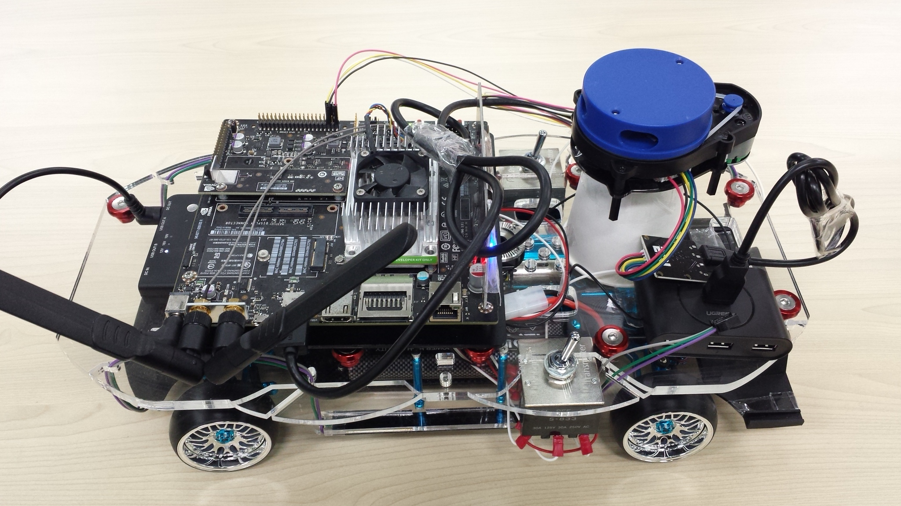
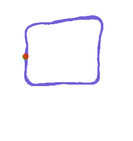

Offline SLAM
オフラインSLAMは、事前に保存してあるrosbagを使ってマップを作成します。
マップをpbstream形式で保存できるため、マップを読み込んで自己位置推定をすることが出来るようになります。
動画

rosbagに記録開始
./01.online_slam.sh myroom.bagでmyroom.bagを作成済みの場合は不要です。
YDLIDARのトピックをrosbagに記録します。
1 2 | cd ~/github/YDLIDAR-Cartographer-ROS/scripts ./05.online_record.sh myroom.bag |
myroom.bagが作成されます。
./01.online_slam.sh myroom.bagとの違いとして、これはYDLIDARの値だけを保存しているので、ファイルサイズが小さくなります。
走行
記録しながら室内を移動します。

室内を2周したら、Ctrol + cで記録を終了します。loop closureにより、1周よりも精度がよくなりやすいです
自己位置推定は旋回に弱いので、出来るだけゆっくり走行します。（0.5km/h程度）
マップ保存
pbstream
pbstreamはCartographer-ROSでLocalization（自己位置推定）を実行する時に使います。
rosbagファイルを使って2Dマップを作成します。
TX2で実行します。
1 | ./06.offline_slam.sh myroom.bag |
myroom.bag.pbstreamが作成されます。
ros map
rosbagファイルとpbstreamファイルからros mapファイルを作成します。
ros mapはros navigationでLocalizationとPath Plannerを実行する時に使います。
引数はmyroom.bagだけですが、実行時にmyroom.bag.pbstreamファイルも参照します。
myroom.bag_map.pgmとmyroom_bag_map.yamlが作成されます。
1 | ./10.offline_save_rosmap.sh myroom.bag |
RViz
マップ作成状況を表示します。
PCで実行します。
offline SLAMは計算速度が速ければリアルタイムよりも速く処理が終わります。
1 | ./08.offline_rviz.sh |
軌跡
走行軌跡を画像に出力することが出来ます。
第一引数のrosbagファイルは走行を保存したbagファイルを指定します。今回はマップ作成用に走行したmyroom.bagを指定しています。
第二引数のpbstreamファイルはマップデータのmyroom.bag.pbstreamファイルを指定します。
myroom.bag_points.plyとmyroom.bag_*.pngファイルが作成されます。
1 | ./07.offline_trajectory.sh myroom.bag myroom.bag.pbstream |

説明
05.online_record.sh
YDLIDAR X4のセンサー値をrosbagに保存します。
引数に出力ファイル名を指定します。
1 | ./05.online_record.sh output.bag |
1 2 3 4 5 6 7 8 9 10 11 12 13 | # usage: # ./05.online_record.sh output.bag source ${HOME}/catkin_ws/devel/setup.bash case $1 in /*\.bag) OUTPUT_BAG=$1 ;; *.bag) OUTPUT_BAG=$PWD/$1 esac echo ${OUTPUT_BAG} |
roscoreを起動
1 2 | roscore & sleep 5 # wait until roscore launch |
YDLIDARを起動
1 2 | roslaunch ydlidar lidar.launch & sleep 15 # wait until ydlidar launch |
-aオプションでトピック全てをファイルに保存
1 | rosrun rosbag record -a -O $OUTPUT_BAG |
走行後にCtrl + cで終了します。
06.offline_slam.sh
Cartographer-ROSのLocalizationで利用するpbstream形式のマップを作成します。
引数に入力rosbagファイル名を指定します。
1 | ./06.offline_slam.sh input.bag |
1 2 3 4 5 6 7 8 9 10 11 12 13 | # usage:
# ./06.offline_slam.sh input.bag
#https://www.ncnynl.com/archives/201811/2789.html
case $1 in
/*\.bag)
INPUT_BAG=$1
;;
*.bag)
INPUT_BAG=$PWD/$1
esac
echo ${INPUT_BAG}
|
cartographer-rosを利用するのでbashを読み込んでおきます。
1 2 3 | export ROS_MASTER_URI=http://自分(tx2)のIP:11311 export ROS_IP=自分(tx2)のIP source /home/ubuntu/catkin_ws/install_isolated/setup.bash |
roscore起動
1 2 | roscore & sleep 5 # wait until roscore launch |
offline SLAM起動
1 | roslaunch cartographer_ros offline_ydlidar_2d_slam.launch bag_filenames:=${INPUT_BAG} |
pbstream保存
1 | rosservice call /write_state ${INPUT_BAG}.pbstream |
pbstreamを作成する場合は、rosbagファイルが必要になります。
そのため、online SLAMでpbstreamを作成することは出来ません。
07.offline_trajectory.sh
マップとなるpbstreamファイルと、そのマップ内を走行して保存したrosbagの走行軌跡を出力します。
input.bagは走行を保存したrosbagファイルです。
myroom.bag.pbstreamはマップのpbstreamファイルです。
1 | ./07.offline_trajectory.sh input.bag myroom.bag.pbstream |
第一引数にbagファイル、第二引数にpbstreamファイルを指定します。
1 2 3 4 5 6 7 8 9 10 11 12 13 14 15 16 17 18 19 20 | # usage:
# ./07.offline_trajectory.sh input.bag input.bag.pbstream
case $1 in
/*\.bag)
INPUT_BAG=$1
;;
*.bag)
INPUT_BAG=$PWD/$1
esac
echo ${INPUT_BAG}
case $2 in
/*\.pbstream)
INPUT_PB=$2
;;
*.pbstream)
INPUT_PB=$PWD/$2
esac
echo ${INPUT_PB}
|
起動時の環境変数
1 2 3 | export ROS_MASTER_URI=http://192.168.0.48:11311 export ROS_IP=192.168.0.48 source /home/ubuntu/catkin_ws/install_isolated/setup.bash |
roscore起動
1 2 | roscore & sleep 5 # wait until roscore launch |
軌跡を出力
1 2 3 | roslaunch cartographer_ros offline_ydlidar_2d_assets_writer.launch \
bag_filenames:=${INPUT_BAG} \
pose_graph_filename:=${INPUT_PB}
|
10.offline_save_rosmap.sh
rosbagファイルとpbstreamファイルからros mapファイルを作成します。
ros mapはros navigationでLocalizationとPath Plannerを実行する時に使います。
1 | ./10.offline_save_rosmap.sh myroom.bag |
引数にbagファイルを指定します。
pbstreamのファイル名はbagファイル名.pbstreamとしています。
1 2 3 4 5 6 7 8 9 10 11 12 13 | # usage:
# ./10.offline_save_rosmap.sh input.bag
#https://www.ncnynl.com/archives/201811/2789.html
case $1 in
/*\.bag)
INPUT_BAG=$1
;;
*.bag)
INPUT_BAG=$PWD/$1
esac
echo ${INPUT_BAG}
|
環境変数設定
1 2 3 | export ROS_MASTER_URI=http://192.168.0.48:11311 export ROS_IP=192.168.0.48 source /home/ubuntu/catkin_ws/install_isolated/setup.bash |
roscore起動
1 2 | roscore & sleep 5 # wait until roscore launch |
ros map作成
1 | roslaunch cartographer_ros offline_ydlidar_2d_assets_writer_ros_map.launch bag_filenames:=${INPUT_BAG} pose_graph_filename:=${INPUT_BAG}.pbstream |